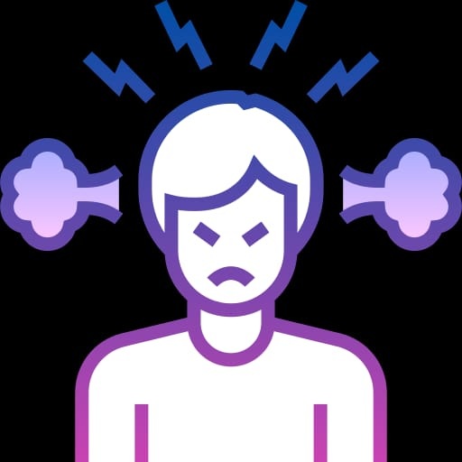

Irratibilidad
La irritabilidad es una respuesta emocional o física que experimentamos cuando nos sentimos molestos, frustrados o agobiados por alguna situación o estímulo. Es una reacción natural del cuerpo que puede manifestarse de diversas formas, como cambios en el estado de ánimo, agitación, nerviosismo, falta de paciencia, aumento de la sensibilidad emocional, entre otros.
La irritabilidad puede ser causada por una variedad de factores, como el estrés, la falta de sueño, la fatiga, la ansiedad, los desequilibrios hormonales, ciertas condiciones médicas, la exposición a estímulos desagradables o el no poder satisfacer nuestras necesidades básicas.
Es importante reconocer y abordar la irritabilidad de manera adecuada, ya que puede afectar nuestra calidad de vida, nuestras relaciones interpersonales y nuestra capacidad para funcionar eficazmente en diferentes ámbitos. Algunas estrategias para manejar la irritabilidad incluyen:
1. Identificar las causas subyacentes: reflexionar sobre qué situaciones o factores pueden estar contribuyendo a tu irritabilidad y tratar de gestionarlos de manera adecuada. Si es necesario, busca ayuda profesional para abordar problemas como el estrés crónico o trastornos de ansiedad.
2. Practicar técnicas de relajación: encontrar actividades que te ayuden a relajarte y reducir el estrés, como la meditación, la respiración profunda, el yoga o la escucha de música relajante.
3. Cuidar tu bienestar físico: asegúrate de dormir lo suficiente, mantener una alimentación balanceada, hacer ejercicio regularmente y buscar actividades que te brinden satisfacción.
4. Comunicación efectiva: expresar tus sentimientos y necesidades de manera clara y respetuosa puede ayudar a prevenir situaciones frustrantes o conflictos innecesarios.
5. Buscar apoyo social: contar con el apoyo de amigos, familiares o grupos de apoyo puede ser de gran ayuda para afrontar la irritabilidad y compartir experiencias similares.
Recuerda que la irritabilidad es una respuesta común y normal en ciertas circunstancias, pero si sientes que afecta significativamente tu vida o bienestar, es recomendable buscar la opinión de un profesional de la salud mental para recibir apoyo y asesoramiento específico.

REGRESAR